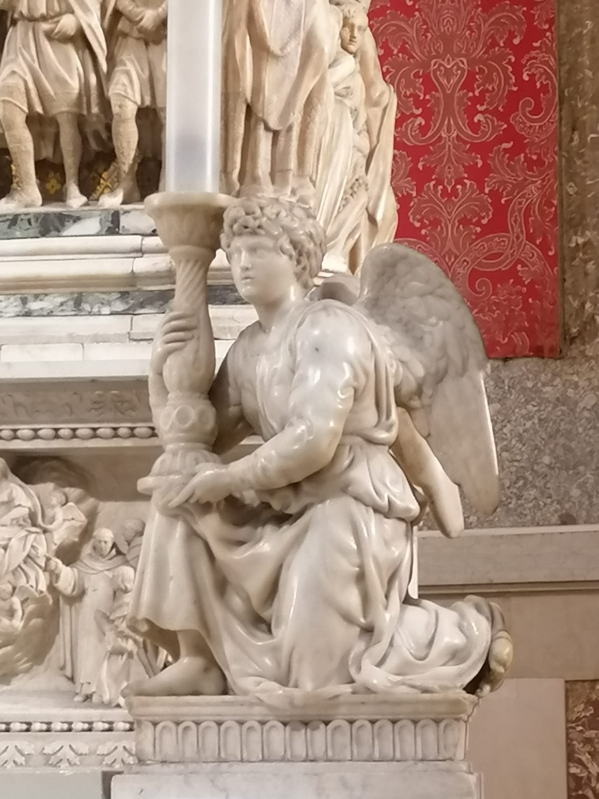
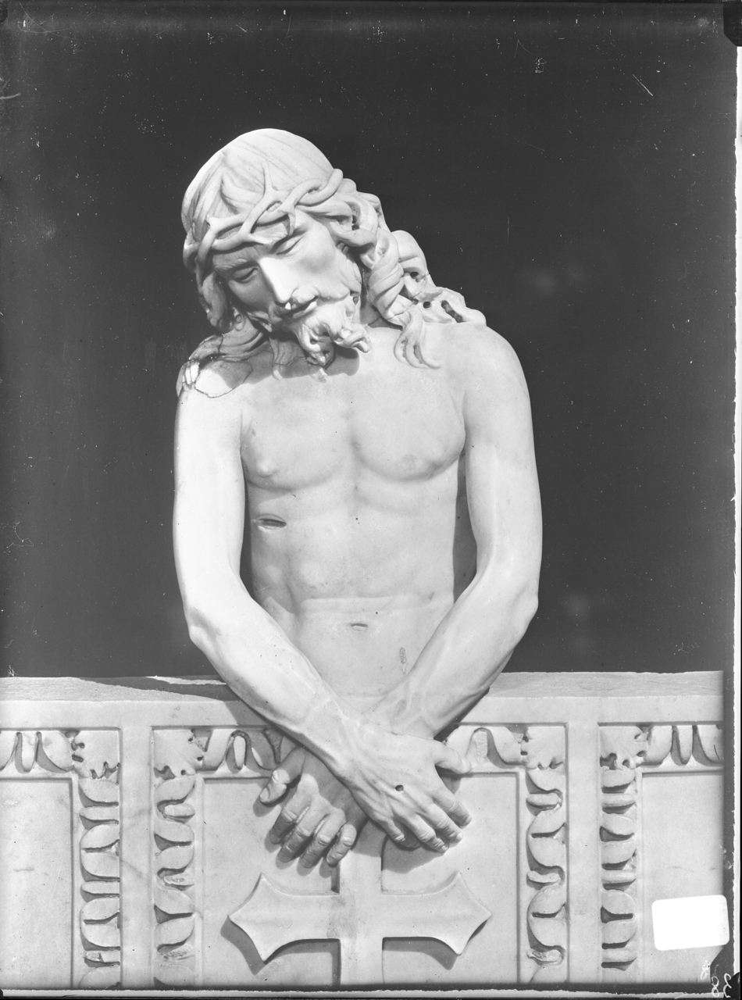

Catalogo

Tutti i metadati
Angelo reggicandelabro di M. Buonarotti
- Creatore: Buonarroti, MichelangeloVIAF
- Data: 1494-1495
- Posizione attuale: Basilica di San DomenicoGeoNames
Apostolo; San Domenico resuscita Napoleone Orsini; Madonna con Bambino; San Domenico e il rogo dei libri degli eretici albigesi
- Creatore: Pisano, NicolaVIAF; Arnolfo, di CambioVIAF
- Data: 1264-1267
- Posizione attuale: Basilica di San DomenicoGeoNames
Arca di San Domenico
- Creatore: Pisano, NicolaVIAF; Arnolfo, di CambioVIAF; Niccolò, Dell'ArcaVIAF; Buonarroti, MichelangeloVIAF Lombardi, AlfonsoVIAF; Cortellini, GirolamoVIAF;
- Data: 1264-1532
- Posizione attuale: Basilica di San DomenicoGeoNames
Arca di San Domenico. Opere di blindamento per la protezione antiaerea
- Creatore: Achille Villani & figliVIAF
- Data: 1940
- Posizione attuale: Palazzo dall'Armi Marescalchi, Bologna

Esposizione di pezzi dell'Arca fatta in occasione del trasporto della salma nel rifugio
- Creatore: Achille Villani & figliVIAF
- Data: 1943
- Posizione attuale: Palazzo dall'Armi Marescalchi, Bologna

Tutti i metadati
Fotografie dei particolari eseguite in occasione del trasporto della salma di S. Domenico nel rifugio (Cimasa)
- Creatore: Achille Villani & figliVIAF
- Data: 1264-1532
- Posizione attuale: Palazzo dall'Armi Marescalchi, Bologna
Legenda Aurea
- Creatore: Da Varazze, IacopoVIAF
- Data: 1298
- Istituzione fornitrice: Biblioteca "Ezio Raimondi" di Filologia Classica e ItalianisticaGeoNames

Legendae Sancti Dominici
- Creatore: Humberti De RomanisVIAF
- Data: 1399
- Istituzione fornitrice: Biblioteca "Ezio Raimondi" di Filologia Classica e ItalianisticaGeoNames
San Petronio
- Creatore: Buonarroti, MichelangeloVIAF
- Data: 1494-1495
- Posizione attuale: Basilica di San DomenicoGeoNames